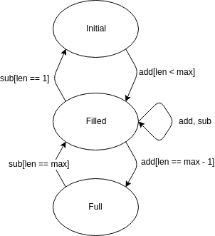
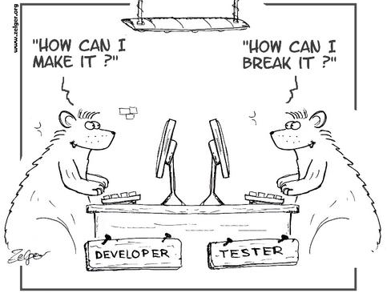
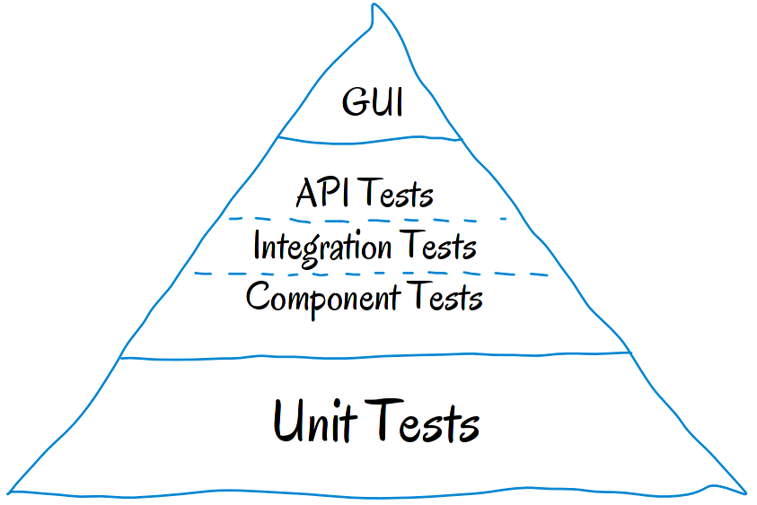

Testing is the process of executing a program or system with the intent of finding errors. (Myers, 1979)
Software Testing is not
... proving that a program contains no errors
... just checking if it works ¯\_(ツ)_/¯
Anatomy of a Test Case
A test case consists of at least
Pre-Condition
Input
Expected Result
A test case should always be reproducible.
A test case is successful if it uncovered a bug
Applications to Testing
What CAN you actually test (as opposed to how)?
Functional Testing
Performance Testing
Stress Testing
Security Testing
Usability Testing
Accessibility Testing
A/B Testing
Acceptance Testing
Compatibility Testing
Regression Testing
Smoke Testing
...
Test Design
Consider a trivial application that, based on the sides of a triangle returns the triangles type.
String triangle(double a, double b, double c) throws Exception {
if(a == b == c) { return "equilateral"; };
if(a == b || b == c || a == c) { return "isosceles"; }
...
throw new Exception("Invalid triangle");
}
Our goal is to provide tests that will possibly uncover bugs in this function - and be smart about it.
Partitions
Partitions are segments of input data that yield the same result.
Data that belongs to the same partition executes the same code paths (usually) - use one test case per partition!
Partitions for the triangle function?
(1, 1, 1), (2, 2, 2), ...
(1.5, 2, 1.5), (2.5, 2.5, 3), ...
(1, 2, 3), (-2, 2, 3), ...
Boundaries
Research has shown that most errors occur at the borders between partitions.
if(a == b == c) { return "equilateral"; }
The most likely inputs to reveal errors in this case would be:
(1.0,1.0,1.0)
(1.0,1.0,1.000001)
(1.0,1.0,0.999999)
States
Depending on its state, a system may behave differently even for identical input.

When testing such an application, not only must the input be considered, but also if the system transitions into the correct states. This is called state-based testing.
Test Coverage
Metrics for checking the applicability of tests: Coverage
Tests can never guarantee that a program is without bugs. You stop testing when your tests are good enough.
Testing is risk based. Test to minimize risk and maximize value, not to uncover all possible bugs.
Testing for Software Engineers

Test Automation
Automated tests mean that you save time on test execution. But:
Automated tests require maintenance.
Automation is a big up-front investment that will take time to repay itself.
Automation seldom reveals new errors but instead avoids regressions.
Better think carefully about what you automate and how!
Test Levels
From top to bottom:
System Tests (UI)
Integration Tests
Unit Tests

The further up the pyramid, the more expensive your tests will be.
Unit Testing Is Not Enough
The Ten Commandments of Good Unit Tests
Thou shalt treat your test code like your application code.
Thou shalt keep your tests isolated from each other.
Thou shalt make your tests fail.
Thy tests shall test one thing, and one thing only.
Thou shalt keep your tests simple, for they art living documentation.
The Ten Commandments of Good Unit Tests
Thy tests shall be fast.
Thou shalt use thy tests to improve thy application code.
Thou shalt run thy tests daily.
Thy tests shall be trustworthy.
Thou shalt think like really hard about what you are testing.
Incomprehensive Tests
@Test
public void myTest() {
var t = new Triangle();
var e = List.of("equlilateral", "isosceles", "equilateral", ...);
for (var i = 0; i < 10; i++) {
if (i == 0) {
assertTrue(e.get(i)
.equals(t.getType(1, 1, 1)));
}
if (i == 1) {
assertTrue(e.get(i)
.equals(t.getType(1.5, 1.5, 2)));
}
...
}
}
Non-Isolated
public class UsesTriangle {
public void calculateArea(Tuple point1, Tuple point2, Tuple point3){
// Calculate sides from points
...
Triangle triangle = new Triangle();
if(triangle.getType(a, b, c) == "equilateral"){
// Calculate Area for this case
}
...
}
@Test
public void anotherTest() {
var usesTriangle = new UsesTriangle();
double result = usesTriangle.calculateArea(a,b,c);
assertEquals(10.0, result);
}
Slow and Untrustworthy
@Test
public void expensiveTest() {
var system = new SystemUnderTest();
int result = system.someReallyExpensiveOperation();
assertEquals(0, result);
}
@Test
public void kindaRandomTest() {
var system = new SystemUnderTest();
// This test fails sometimes, just run it again if that happens
int result = system.randomOperationThatSometimesFails();
assertEquals(0, result);
}
What is it good for?
Benefits of a good unit test suite:
Refactoring becomes a breeze ✌
Unit Tests enforce good code style; In writing good unit tests you write good code ⭐
Instant feedback, no more broken commits. 🚓
Summary
Testing is a systematic approach to finding errors in programs.
Test design techniques: Partitions, Boundaries and Coverage